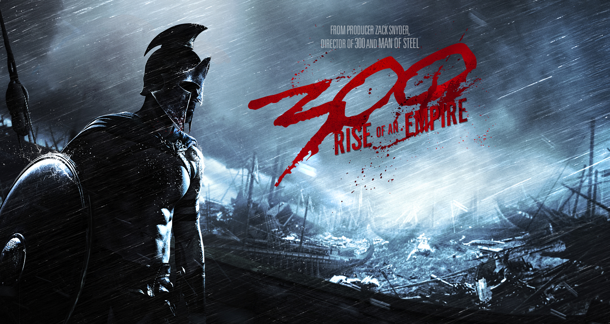
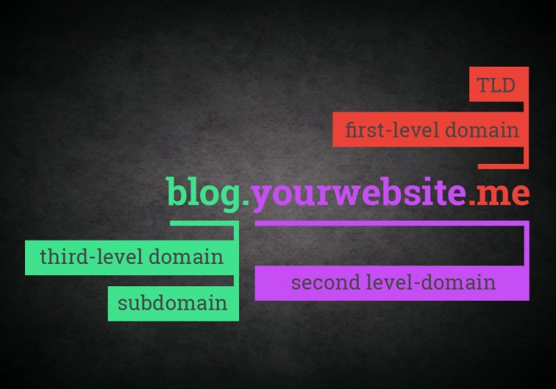

codeberry tapasztalat 12 nap után
Szóval az úgy kezdődött, hogy.....egyszer régen egy messzi-messzi galaxisban.... 😁
Comodore+4, basic, nyilvános fülke, hordozható telefon, atari, motorola táskás mobil, ericsson gh388, t68i, nokia communicator, symbian... egy kis nosztalgiázzunk. 😁
olvass tovább
github alapok

telnek a napok, gyűlnek a feladatbeadások. egyre jobban érzem magam. vissza vissza tekingetek az elejére, és próbálom a feladatokat kompletten segítség nélkül is megoldani. még nem könnyű,de rajta vagyok a témán.
olvass tovább
subdomain

15.nap :D 284 feladat. vajon mikor lesz a következő kitűzőm...? 😁😂😅 esküszöm ez az egyik leginspirálóbb része a codeberry tanulásának. figyelni, hogy minden nap tanuljak, azaz adjak be feladatot. az utolsó projekt a domain regisztráció és közzététel volt. igaz én ezzel kezdtem 2 napja.... 😂😂😂 nem is én lettem volna 😅
olvass tovább